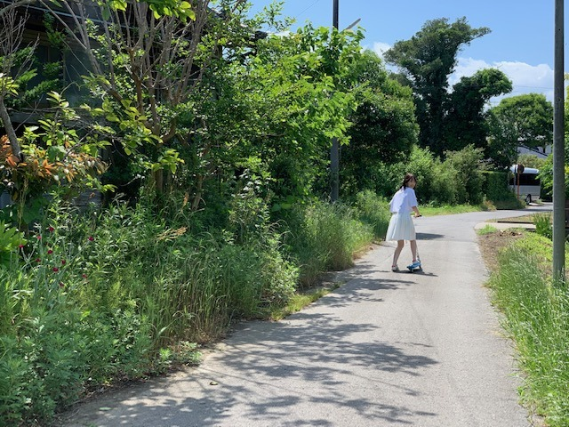
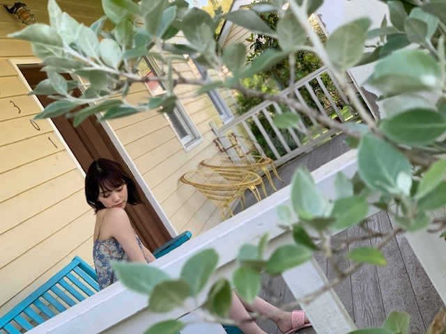
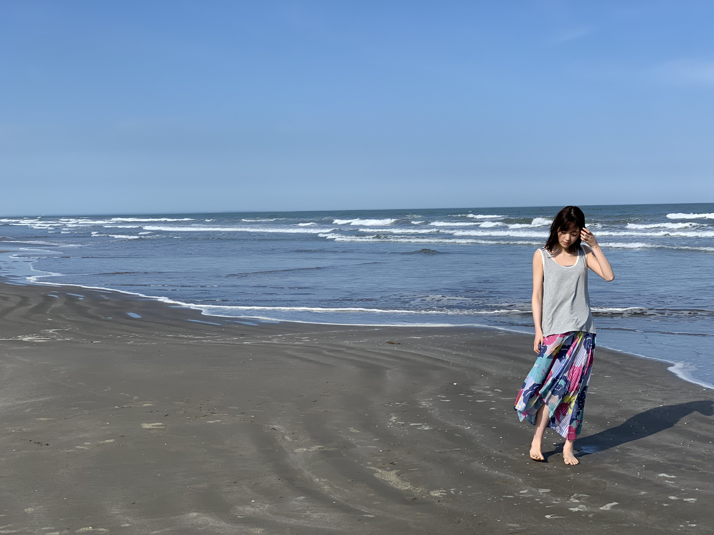

2019/0614Fri夏がやってくる
どうも！
EX大衆 発売中です！
ありがたいことに表紙をやらせていただいています。
ローラースルーゴーゴーに乗ったりスイカを食べたりホースで水まきをしたり夏満喫しました！
いい天気だったなあ

るんるん

海にも行きました
6月だけで3回は撮影で海に行ってて、海のイメージがわたしにはあるのかなあ？とマネージャーさんと話していました。笑


脳内には "夏の大三角形" 流れてます
夏ソングすき。
そして
いつか夏！なcmに出るのが夢です
ドラマも！
ウォーターボーイズとかみたいなザ 青春 も素敵
夏なこと、今年はできるかな？
BBQとかお祭りとか花火とかいいし
宇治金時のかき氷もとうもろこしも好きだし
ジブリも観たいし
きっと撮影とツアーで夏を感じながら満喫してたら、あっという間に秋が来るんですよね

なので今を目一杯楽しみましょう！
告知
「BOMB」与田ちゃん梅ちゃんと表紙
「東海ウォーカー」
「TVガイドAlpha EPISODE U」
「装苑」
「別冊spoon.」表紙
「シネマスクエア」
「seventeen」
「日経エンタテインメント！」
「プチコミック」
「BOMB」
「FINEBOYS」
「+act. （プラスアクト）」
「ar」初表紙
「TV station」
「ベツコミ」
「Maybe」
「EX大衆」表紙
6/22「アップトゥボーイ」表紙
では
2019/06/14 13:42
コメント(253)
堀ちゃん！EX大衆表紙なんだね！めちゃ可愛い！！肌真っ白で透明感すごいなぁ！ローラースルーゴーゴーなんて名前なんだ！笑笑 ほんとに夏の日焼け止めとかシーブリーズのcmやってそうだなぁ笑笑 海似合う！！私は海で泳げないけど、行くと楽しいよね！！ホットギミックの試写会の余韻がまだ消えないよー笑笑 昼間は普通の女の子みたいな感じだったのに、夜になると都会な感じに迷い込んで行くっていうのが、都会に憧れてる私も共感したなぁ。。 髪型も、少し短くなったり、初ちゃんが変わってくんだなって思った！みおちゃんも髪を切るのは意味があるって言ってたよね！公開したらちゃんと感想言うね！雑誌チェックするね！
ももんが
ももんが
こんにちはです❤️
いつもいっぱいありがとう❤️
最後の方に少し見れると思います❤️
無理しないでくださいね❤️
応援しますね❤️
(๑˃̵ᴗ˂̵)ｖ
いつもいっぱいありがとう❤️
最後の方に少し見れると思います❤️
無理しないでくださいね❤️
応援しますね❤️
(๑˃̵ᴗ˂̵)ｖ
未央奈は肌が白くてイメージも爽やかで、夏がすごく似合う！パーソナルカラーもブルベ夏だもんね！素敵です*ˊᵕˋ*うらやましい\❤︎/
今月はたくさんの雑誌に掲載されてますね！
ありがたいことに今年も全ツ当選したので、夏を満喫することができます！
また1つ楽しみが増えました！
ありがたいことに今年も全ツ当選したので、夏を満喫することができます！
また1つ楽しみが増えました！
海かぁ。
(更新)ありがとうございます。
(更新)ありがとうございます。
夏だ、ライブだ、未央奈に会える。それだけで、夏が好き
ブログ更新ありがとう
未央奈ちゃん可愛い
早く夏来ないかなー
未央奈ちゃん可愛い
早く夏来ないかなー
マジ夏すぎる。堀ちゃんは夏が似合う。肌はめちゃ白いけど笑笑
海冷たいのかな。やっぱり海でも万全の日焼け対策をしたのかな
堀ちゃんブログ更新ありがとう。
ほんと更新が多くファンの気持ち解ってる。
正直今日は想定外だったよ。
堀ちゃんはやっぱ夏が一番似合うよ、
夏といえば海だけじゃなく、キャンプ、花火、浴衣、かき氷、等、全部似合うね。
夏のジブリといえばトトロと蛍の墓かな、
蛍の墓は暗くて悲しすぎるね。
全ツで会えるの楽しみだよ。
バイバイキーン
ほんと更新が多くファンの気持ち解ってる。
正直今日は想定外だったよ。
堀ちゃんはやっぱ夏が一番似合うよ、
夏といえば海だけじゃなく、キャンプ、花火、浴衣、かき氷、等、全部似合うね。
夏のジブリといえばトトロと蛍の墓かな、
蛍の墓は暗くて悲しすぎるね。
全ツで会えるの楽しみだよ。
バイバイキーン
未央奈ちゃんめっちゃ似合う！！！
いつかCMやドラマ来るといいね ^ ^
夏らしいこといっぱいしよう！
今年も全ツ大阪と名古屋行きます！楽しみー！！
いつかCMやドラマ来るといいね ^ ^
夏らしいこといっぱいしよう！
今年も全ツ大阪と名古屋行きます！楽しみー！！
今月号のar読みました！
表紙うれしいおめでとう；＿；
メンバー内で流行ってるデンキバリブラシ、お高くてびっくりしちゃった！！
みんなどんどん益々可愛いが更新されていく、、
未央奈ちゃんが自分磨き頑張ってるのを見ると、私も頑張ろうって思うし勇気をもらえます！
arで言ってたADDICTIONのアイシャドウ、お揃いにしちゃおうかなぁ。。組み合わせカワイイ！(＾＾)
夏が似合う女の子って素敵だなあ〜〜〜
内側から出てるキラキラした自信とか、笑顔がそういう雰囲気にさせるんだろうな
今日もお疲れ様〜＾＾
表紙うれしいおめでとう；＿；
メンバー内で流行ってるデンキバリブラシ、お高くてびっくりしちゃった！！
みんなどんどん益々可愛いが更新されていく、、
未央奈ちゃんが自分磨き頑張ってるのを見ると、私も頑張ろうって思うし勇気をもらえます！
arで言ってたADDICTIONのアイシャドウ、お揃いにしちゃおうかなぁ。。組み合わせカワイイ！(＾＾)
夏が似合う女の子って素敵だなあ〜〜〜
内側から出てるキラキラした自信とか、笑顔がそういう雰囲気にさせるんだろうな
今日もお疲れ様〜＾＾
夏楽しみだね
健康には気おつけてね
健康には気おつけてね
未央奈ちゃんの連続ブログ更新が嬉しいです♪
グラビアや写真を見ると、案外未央奈ちゃんって、夏が似合うのかも！
夏女、良いと思います♪☆
グラビアや写真を見ると、案外未央奈ちゃんって、夏が似合うのかも！
夏女、良いと思います♪☆
未央奈ちゃん、ブログ更新ありがとうございます！
未央奈ちゃんは、ザ・青春な感じの爽やかなCMやドラマにもとても合いそうなので、是非観てみたいです！
オファーが届くと良いですね！！
忙しい時は、時間の経過が特に早いので、しっかり今を大切にして生きていかないと、気が付いたら過ぎ去ってしまいますよね。
僕も、今を大切にして、過ごしていきたいと思います！
たくさん告知があって、未央奈ちゃんがそれだけ活躍されてると言うことですし、とても嬉しいです！
また、お忙しい中、たくさんブログを更新して下さり、とても嬉しいです！！
未央奈ちゃん、大好きです
未央奈ちゃんは、ザ・青春な感じの爽やかなCMやドラマにもとても合いそうなので、是非観てみたいです！
オファーが届くと良いですね！！
忙しい時は、時間の経過が特に早いので、しっかり今を大切にして生きていかないと、気が付いたら過ぎ去ってしまいますよね。
僕も、今を大切にして、過ごしていきたいと思います！
たくさん告知があって、未央奈ちゃんがそれだけ活躍されてると言うことですし、とても嬉しいです！
また、お忙しい中、たくさんブログを更新して下さり、とても嬉しいです！！
未央奈ちゃん、大好きです
楽しみ
こんにちは〜
、、堀ちゃん、、一卵性の〜三人姉妹（笑）くらいの、、大活躍だね〜
、、体調、、崩さないように、、注意してね〜
、、じゃあ、、またね〜
、、堀ちゃん、、一卵性の〜三人姉妹（笑）くらいの、、大活躍だね〜
、、体調、、崩さないように、、注意してね〜
、、じゃあ、、またね〜
未央奈さん、こんにちはー。
少し前にコメントさせて貰ったのですが、
私は、未央奈さんにZARDの『揺れる想い』に
のせてポカリCMのリメイク版をやって欲しい
と心の中で切望していました。が、別の女優さんで既にリメイクされてました。
２０数年前とは違ったテイストで、且つ
坂井泉水さんの歌声ではなかったので、あれはあれで良いと感じました。
その他大勢すぎる視聴者の一人として、当時の
CMを忠実に再現するのなら、未央奈さんが
最適任。いや、未央奈さんしか考えられない
と自分勝手に感じています。
まぁ～当時、未央奈さんは、まだ卵から誕生して
なかったので、そのCMを観た事ないでしょうけど。
のぎおび、間に合わない。無念。
少し前にコメントさせて貰ったのですが、
私は、未央奈さんにZARDの『揺れる想い』に
のせてポカリCMのリメイク版をやって欲しい
と心の中で切望していました。が、別の女優さんで既にリメイクされてました。
２０数年前とは違ったテイストで、且つ
坂井泉水さんの歌声ではなかったので、あれはあれで良いと感じました。
その他大勢すぎる視聴者の一人として、当時の
CMを忠実に再現するのなら、未央奈さんが
最適任。いや、未央奈さんしか考えられない
と自分勝手に感じています。
まぁ～当時、未央奈さんは、まだ卵から誕生して
なかったので、そのCMを観た事ないでしょうけど。
のぎおび、間に合わない。無念。
そうだね～
夏は､やっぱりBBQとか
GBLも観たいよね～♪
あっ､ちなみにBBQは
バーベキューの事です！


夏は､やっぱりBBQとか
GBLも観たいよね～♪
あっ､ちなみにBBQは
バーベキューの事です！
EX大衆買いました!
堀ちゃんかわいすぎ:
堀ちゃんかわいすぎ:
このブログを見て、やっぱり堀さんは夏が似合うなと思いました
EX大衆、見つけ次第購入します！
EX大衆、見つけ次第購入します！
堀ちゃんは白いから海のイメージは...
不思議や...浜辺が似合う女堀未央奈！！！
夏といえばやっぱ花火大会やねー
女の子が浴衣とか着て来ちゃったりして
もぉ〜う俺ドッキドキ！！！
赤かった！で帯が抹茶色！！！
湘南の海でサザンオールスターズ
かからないことはない笑
湘南あるある♪
不思議や...浜辺が似合う女堀未央奈！！！
夏といえばやっぱ花火大会やねー
女の子が浴衣とか着て来ちゃったりして
もぉ〜う俺ドッキドキ！！！
赤かった！で帯が抹茶色！！！
湘南の海でサザンオールスターズ
かからないことはない笑
湘南あるある♪
夏を先取り！堀 みおにゃ♪ヽ(´▽｀)/ もうすぐ！(￣ー￣)本番ですな❗・・・・ダイエット始めなきゃ✨
お疲れ様です!
乃木坂の夏、未央奈ちゃんの夏、みんなの夏来ましたね！
今年の夏は未央奈ちゃんに会えるので、幸せです！
いつも可愛い未央奈ちゃんを見られて、幸せ！
今年の夏は未央奈ちゃんに会えるので、幸せです！
いつも可愛い未央奈ちゃんを見られて、幸せ！
EX大衆買ったよ！
堀ちゃんと夏を過ごしてみたい！
ホットギミック 、個握、全ツの神宮ライブを楽しみにしてます！
堀ちゃんと夏を過ごしてみたい！
ホットギミック 、個握、全ツの神宮ライブを楽しみにしてます！
未央奈～～～～～～。一足先の夏満喫だね。素足とかだしてると虫にさされるよ。ジメシメじとじともイヤだけど、夏はもっといやだぁ。未央奈～～～。神宮で待っててね。いくよ。ついに初ライブ。じゃ。
今年の夏は乃木坂ライブで熱い夏をすごすぞー。もちろん堀さまを一生懸命応援しますよー( ・∇・)
未央奈ブログ更新ありがとう！
EX大衆買ったよ。
夏らしい感じが似合っててすごく可愛いし、インタビューも良かったよ。
色々なことをしっかり考えてるのがわかって、未央奈のこういう真面目なところ好きだなあと思った。
夏！なCM出て欲しい！ザ青春なドラマも！
未央奈には夏なこと楽しんでほしいけど、ツアーがあるから忙しいのかな？
僕らファンにとっては、ステージに立つ未央奈を見られることが最高の夏の思い出になるのだから未央奈に感謝！
雑誌の告知がたくさんで凄いね！
FINE BOYSとシネマスクエアとベツコミ買ったよ。
載ってる写真が可愛いのはもちろんなんだけど、インタビューは未央奈が思ってることを知れるのが嬉しい。
では！
EX大衆買ったよ。
夏らしい感じが似合っててすごく可愛いし、インタビューも良かったよ。
色々なことをしっかり考えてるのがわかって、未央奈のこういう真面目なところ好きだなあと思った。
夏！なCM出て欲しい！ザ青春なドラマも！
未央奈には夏なこと楽しんでほしいけど、ツアーがあるから忙しいのかな？
僕らファンにとっては、ステージに立つ未央奈を見られることが最高の夏の思い出になるのだから未央奈に感謝！
雑誌の告知がたくさんで凄いね！
FINE BOYSとシネマスクエアとベツコミ買ったよ。
載ってる写真が可愛いのはもちろんなんだけど、インタビューは未央奈が思ってることを知れるのが嬉しい。
では！
夏の前に梅雨です。
昨年のヤフオクドームは
かなり降りました。
昨年のヤフオクドームは
かなり降りました。
ホットギミック 楽しみすぎる！！
学校の合唱コンの会場のホールの近くに映画館あるから帰りに行きます！！
学校の合唱コンの会場のホールの近くに映画館あるから帰りに行きます！！
夏のイメージ。確かに、風景的にも海辺とか砂浜って堀ちゃんの可愛さにとっても合ってる気がする(*´-`) あっという間に夏→秋になる。感覚も分かるけど。とにかく、夏も1日1日楽しく過ごせるといいねぇ♪♪
雑誌の量が凄い！私も最近は毎日のように本屋に行き買いまくってます！ベツコミの表紙好きだなぁ 舞台挨拶外れたり、学校やバイトで行けなかったりして悔しいので、初日舞台挨拶は行きたいなぁと願ってます！
舞台挨拶外れたり、学校やバイトで行けなかったりして悔しいので、初日舞台挨拶は行きたいなぁと願ってます！
更新有難う！
御疲れ様でした！
何時も頑張って下さい、
常に必ずしても応援しています。
どうか御身体に気を付けて下さい。
ずっと大好き！
御疲れ様でした！
何時も頑張って下さい、
常に必ずしても応援しています。
どうか御身体に気を付けて下さい。
ずっと大好き！
堀ちゃん、お疲れ様ですね
海風でボサボサになった髪の毛の堀ちゃんをちょっと想像
してみた。セクシーかもよ！
Singoutのしかちゃん動画の中にチーズドックかなぁ？
食べてる動画を観ました。何かね、堀ちゃんの食べるシーンが今更ながら大好きで、口元が可愛くて大好き。
きたーって感じでした。嬉しかったよ！
主演女優賞ノミネートおめでとう
がんばれー、堀ちゃん！
海風でボサボサになった髪の毛の堀ちゃんをちょっと想像
してみた。セクシーかもよ！
Singoutのしかちゃん動画の中にチーズドックかなぁ？
食べてる動画を観ました。何かね、堀ちゃんの食べるシーンが今更ながら大好きで、口元が可愛くて大好き。
きたーって感じでした。嬉しかったよ！
主演女優賞ノミネートおめでとう
がんばれー、堀ちゃん！
未央奈ちゃんブログありがとう♫
EX大衆、未央奈ちゃん表紙おめでとう！
早くチェックするね(^∇^)
海、3回も行ったんだね！私は、今年1回行ったよ！去年とかは、部活が忙しくて海に行ったりできなかったけど、今年は去年より沢山行けるといいな♪
のぎおび、楽しみにしてるね！
EX大衆、未央奈ちゃん表紙おめでとう！
早くチェックするね(^∇^)
海、3回も行ったんだね！私は、今年1回行ったよ！去年とかは、部活が忙しくて海に行ったりできなかったけど、今年は去年より沢山行けるといいな♪
のぎおび、楽しみにしてるね！
未央奈さんへ
私の親戚のいとこは埼玉の川越に住んでいますが、以前、叔父さんの仕事の転勤で岐阜の飛騨高山の近くに数年ほど住んでいました。
夏はジリジリ暑すぎる埼玉の人でも「飛騨高山の夏の暑さは耐えられなかった」と言っています。
未央奈さんは、湿気の多い東京の夏の暑さは大丈夫ですか？
私の親戚のいとこは埼玉の川越に住んでいますが、以前、叔父さんの仕事の転勤で岐阜の飛騨高山の近くに数年ほど住んでいました。
夏はジリジリ暑すぎる埼玉の人でも「飛騨高山の夏の暑さは耐えられなかった」と言っています。
未央奈さんは、湿気の多い東京の夏の暑さは大丈夫ですか？
夏を体現している！なんと…(*≧∀≦*)
未央奈ちゃんブログ更新ありがとう！
夏というかすごい爽やかなイメージある！
海が似合ってて素敵〜⸜(* ॑꒳ ॑* )⸝⋆*
日光アレルギーって言ってたけど、
それは大丈夫なのかな？( ･ ･̥ )
ジブリいいね〜！
トトロの森行って自然を感じたい笑笑
未央奈ちゃんは森林浴したりするの〜？
夏というかすごい爽やかなイメージある！
海が似合ってて素敵〜⸜(* ॑꒳ ॑* )⸝⋆*
日光アレルギーって言ってたけど、
それは大丈夫なのかな？( ･ ･̥ )
ジブリいいね〜！
トトロの森行って自然を感じたい笑笑
未央奈ちゃんは森林浴したりするの〜？
あきちゃんです。こんばわみおなちゃん。7月4日の名古屋ドームのコンサートツアーに行きますね。これであと東京の明治神宮球場のコンサートツアーが当たればパーフェクトなんですけど、みおなちゃん当たるようにパワー分けてくださいね。なんせぼくわ来週の火曜日誕生日です。みおなちゃん誕生日プレゼントで乃木坂46のコンサートツアーのチケットプレゼントされればいいな。とりあえず名古屋ドームでみおなちゃんに会えるのが楽しみです。でもみおなちゃん7月4日から欅坂46さんも富士急ハイランドでコンサートツアーがあります。今乃木坂46か欅坂46か考えています。でも欅坂46さんにいっぱい会えているから乃木坂46さんのコンサートツアーに行こうかな、みおなちゃん7月4日名古屋ドームで会いましょう。乃木坂46のなかでみおなちゃんが大好きだよ。今日みおなちゃんが表紙の本二冊買いました。みおなちゃんの笑顔見てるとストレスなんて抜けちゃうもん。コメントはいるまで何回も書きます。❤❤❤❤❤❤❤❤❤❤❤❤❤❤❤❤❤❤❤❤❤❤❤❤❤❤❤❤❤❤❤❤❤❤❤❤❤❤❤❤❤
夏の大三角形…どのアーティストさんの作品かきになります
NICO Touches the Wallsさんの夏の大三角形がすきです〜！（＾ν＾）
NICO Touches the Wallsさんの夏の大三角形がすきです〜！（＾ν＾）
堀未央奈❤こんばんは 撮影で海に行って来たんだね 楽しそうだね ドラマとかCM に出れるといいね 叶うといいね 頑張ってね(*^_^*)
未央奈ブログ更新ありがとう！
EX大衆未央奈出てるって知ってすぐに買いに行ったよ！
夏らしさを満喫しながら撮影出来て良かったね！
表紙おめでとう！
未央奈めっちゃ可愛し、私服もオシャレだよね！
夏が来れば全ツも始まって来るよね！
体調には気をつけてね！
夏といえば、BBQや、お祭りだよねー
トウモロコシ美味しいよね！
またコメントします！
EX大衆未央奈出てるって知ってすぐに買いに行ったよ！
夏らしさを満喫しながら撮影出来て良かったね！
表紙おめでとう！
未央奈めっちゃ可愛し、私服もオシャレだよね！
夏が来れば全ツも始まって来るよね！
体調には気をつけてね！
夏といえば、BBQや、お祭りだよねー
トウモロコシ美味しいよね！
またコメントします！
みおな
いいねぇ。
夏っ！！！
って感じやねー。
いいねぇ。
夏っ！！！
って感じやねー。
未央奈さん、こんにちは！
ブログの連日更新ありがうございます
感謝！感謝です！！
未央奈さんが載っている雑誌が
たくさんあって、あれこれ買ったり
見たりと大忙しです(^_^)
梅雨が明ければ本格的に夏ですね
写真がイキイキとしていて
海のイメージが伝わってきます
絵になりますね～
絵といえば！
乃木坂工事中の絵心企画
またやって頂きたいなぁ
掘画伯のツンとしたトークの返しが
大好きなんです＼(^_^)／
夏なこと、きっとできますよ！
夏も仕事も楽しみましょう
そして
夏CMいつか叶うといいですね
夏バテしないように
ごはん、しっかり食べて下さいな
ブログの連日更新ありがうございます
感謝！感謝です！！
未央奈さんが載っている雑誌が
たくさんあって、あれこれ買ったり
見たりと大忙しです(^_^)
梅雨が明ければ本格的に夏ですね
写真がイキイキとしていて
海のイメージが伝わってきます
絵になりますね～
絵といえば！
乃木坂工事中の絵心企画
またやって頂きたいなぁ
掘画伯のツンとしたトークの返しが
大好きなんです＼(^_^)／
夏なこと、きっとできますよ！
夏も仕事も楽しみましょう
そして
夏CMいつか叶うといいですね
夏バテしないように
ごはん、しっかり食べて下さいな
未央奈ちゃんありがとうございます！楽しみにしてます‼頑張ります‼ありがとうございます‼頑張ります‼気をつけて下さい！ありがとうございます！
みおなー
夏くるねー！
ホットギミック楽しみにしてるね
体調に気をつけて～
頑張れみおな！
こばより
夏くるねー！
ホットギミック楽しみにしてるね
体調に気をつけて～
頑張れみおな！
こばより
なつみおな最高ですね！
太陽の光と堀ちゃんの笑顔が眩しいぜっ！！
太陽の光と堀ちゃんの笑顔が眩しいぜっ！！
堀ちゃんの世代でもローラースルーゴーゴーって言うんだね。
若い子は皆、キックボードで通ってると思ってました（笑）
若い子は皆、キックボードで通ってると思ってました（笑）


全国ツアー神宮千秋楽あたりましたーありがとう！！
アクション女優の夢を叶えて下さい！側転の動画みてみたいです。。